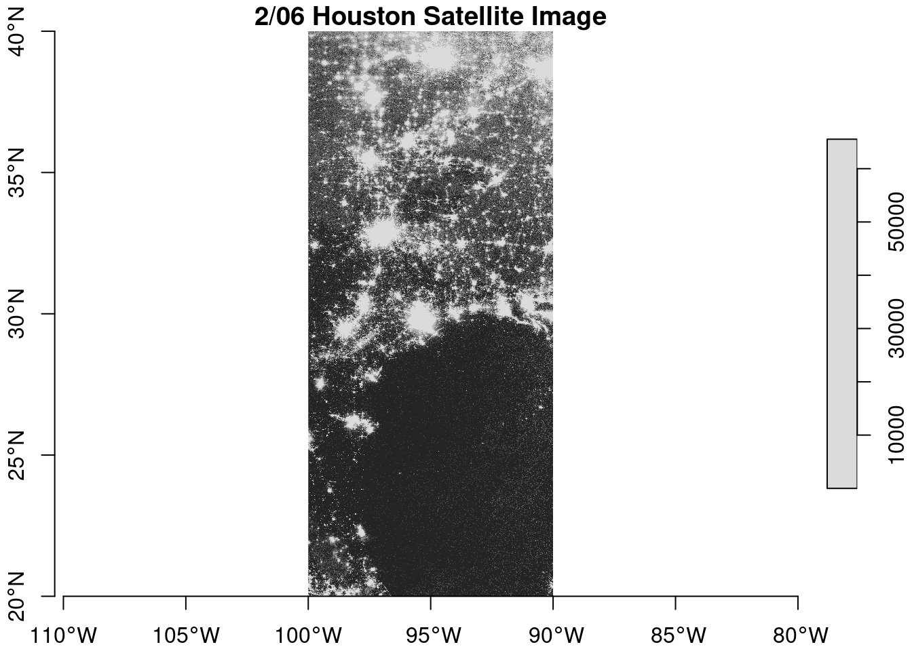
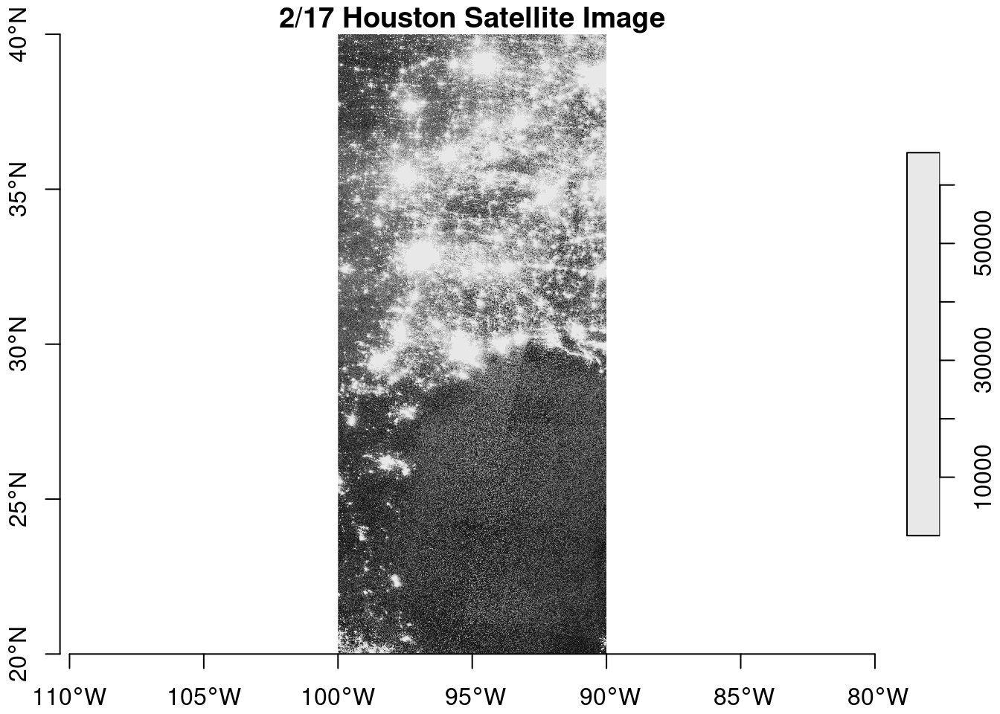
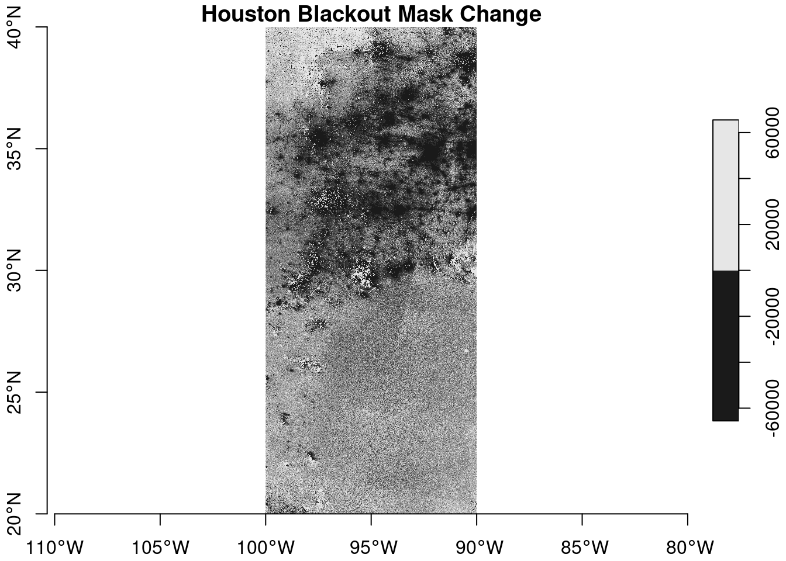
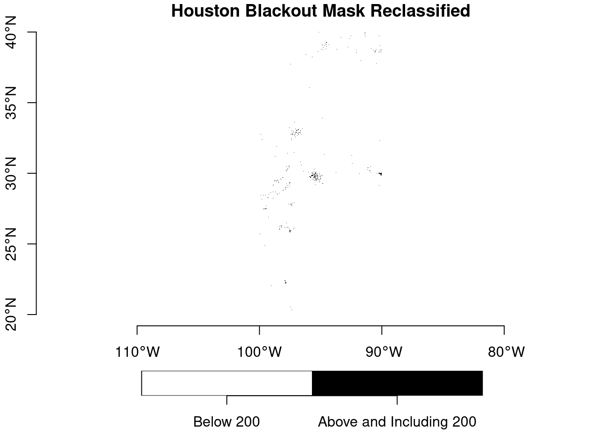
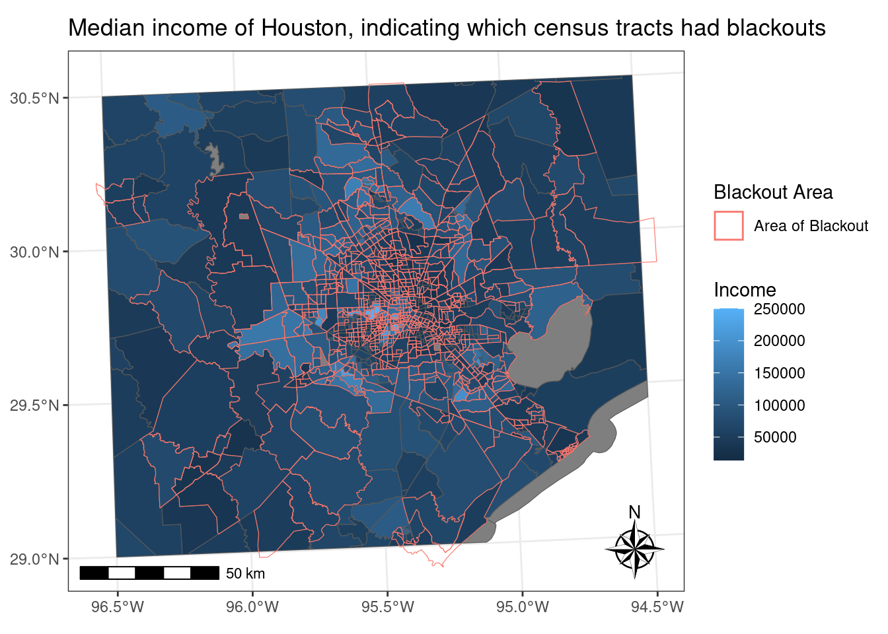
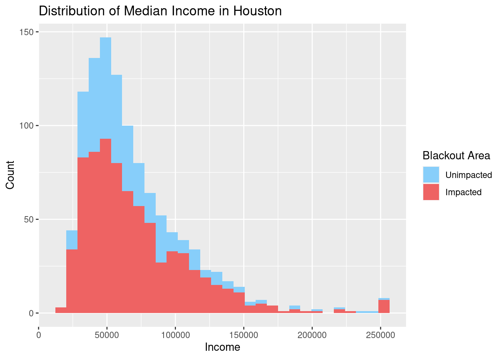

#read in libraries
library(sf)
library(tidyverse)
library(terra)
library(spData)
library(spDataLarge)
library(geodata)
library(tmap)
library(stars)
library(sp)
library(raster)
library(ggspatial)Analysis of the Texas Winter Storm causing intense blackouts
Overview
“In February 2021, the state of Texas suffered a major power crisis, which came about as a result of three severe winter storms sweeping across the United States on February 10–11, 13–17, and 15–20.”1 For more background, check out these engineering and political perspectives.
Our analysis will be based on remotely-sensed night lights data, acquired from the Visible Infrared Imaging Radiometer Suite (VIIRS) onboard the Suomi satellite. to do this, we will use the VNP46A1 to detect differences in night lights before and after the storm to identify areas that lost electric power.
Our end goal is to determine the number of homes that lost power. The data we will be looking at is from OpenStreetMap data on buildings and roads.
To investigate potential socioeconomic factors that influenced recovery, you will link your analysis with data from the US Census Bureau.
Data Info
Night lights
Use NASA’s Worldview to explore the data around the day of the storm. There are several days with too much cloud cover to be useful, but 2021-02-07 and 2021-02-16 provide two clear, contrasting images to visualize the extent of the power outage in Texas.
VIIRS data is distributed through NASA’s Level-1 and Atmospheric Archive & Distribution System Distributed Active Archive Center (LAADS DAAC). Many NASA Earth data products are distributed in 10x10 degree tiles in sinusoidal equal-area projection. Tiles are identified by their horizontal and vertical position in the grid. Houston lies on the border of tiles h08v05 and h08v06. I therefore need to download two tiles per date.
Roads
Typically highways account for a large portion of the night lights observable from space (see Google’s Earth at Night). To minimize falsely identifying areas with reduced traffic as areas without power, I will ignore areas near highways.
OpenStreetMap (OSM) is a collaborative project which creates publicly available geographic data of the world. Ingesting this data into a database where it can be subsetted and processed is a large undertaking. Fortunately, third party companies redistribute OSM data. I used Geofabrik’s download sites to retrieve a shapefile of all highways in Texas and prepared a Geopackage (.gpkg file) containing just the subset of roads that intersect the Houston metropolitan area.
Houses
I also obtained building data from OpenStreetMap. I again downloaded from Geofabrick and prepared a GeoPackage containing only houses in the Houston metropolitan area.
Socioeconomic
We cannot readily get socioeconomic information for every home, so instead I obtained data from the U.S. Census Bureau’s American Community Survey for census tracts in 2019. The folder ACS_2019_5YR_TRACT_48.gdb is an ArcGIS “file geodatabase”, a multi-file proprietary format that’s roughly analogous to a GeoPackage file.
Note: You can use st_layers() to explore the contents of the geodatabase. Each layer contains a subset of the fields documents in the ACS metadata.
Find locations of blackouts
For improved computational efficiency and easier interoperability with sf, I recommend using the stars package for raster handling.
In this section, I’ll go ahead and
- read in night lights tiles and
- combine tiles into a single
starsobject for each date (2021-02-07 and 2021-02-16)
#Read in and combine .tif files:
#read in stars .tif
night_lights1_02_07 <- read_stars("../data/VNP46A1/VNP46A1.A2021038.h08v05.001.2021039064328.tif")
night_lights2_02_07 <- read_stars("../data/VNP46A1/VNP46A1.A2021038.h08v06.001.2021039064329.tif")
night_lights3_02_16 <- read_stars("../data/VNP46A1/VNP46A1.A2021047.h08v05.001.2021048091106.tif")
night_lights4_02_16 <- read_stars("../data/VNP46A1/VNP46A1.A2021047.h08v06.001.2021048091105.tif")
#combine 02-07 stars files together
night_light_combine_02_07 <- st_mosaic(night_lights1_02_07,
night_lights2_02_07,
file_ext = ".tif")
#combine 02-16 stars files together
night_light_combine_02_16 <- st_mosaic(night_lights3_02_16,
night_lights4_02_16,
file_ext = ".tif")
#plot 02-07 star file to see if they were correctly combined
plot(night_light_combine_02_07, main = "2/06 Houston Satellite Image", axes = TRUE)
#plot 02-16 star file to see if they were correctly combined
plot(night_light_combine_02_16, main = "2/17 Houston Satellite Image", axes = TRUE)
Here, I can see what the image looks like completed for both dates.
Create a blackout mask
In order to find the difference in night light intensity, I’ll have to reclassify the rasters to easily spot the difference. For this section I’ll:
- find the change in night lights intensity (presumably) caused by the storm
- reclassify the difference raster, assuming that any location that experienced a drop of more than 200 nW cm-2sr-1 experienced a blackout
- assign
NAto all locations that experienced a drop of less than 200 nW cm-2sr-1
#Find change in night light intensity:
#find the difference between the two night lights intensity
night_light_change <- (night_light_combine_02_07 - night_light_combine_02_16)
#plot night_light_change to see the outcome
plot(night_light_change, main = "Houston Blackout Mask Change", axes = TRUE)
#Reclassify and plot reclassified night light change:
#reclassify the difference in night light change to show those that are above and below 200
night_light_change_reclassify <- cut(x = night_light_change, breaks = c(-Inf, 200, Inf), labels = c("Below 200", "Above and Including 200")) #rename legend labels
#plot reclassified matrix to see if it was changed
plot(night_light_change_reclassify,
main = "Houston Blackout Mask Reclassified",
axes = TRUE,
key.pos = 1, #position of key is at bottom
col = c('white', 'black')) #change color scheme
#create a blackout mask that has those that are greater than 200 nW cm^-2^sr^-1^:
#assign NA to values that are below 200
night_light_change[night_light_change <= 200] = NAVectorize the mask
Currently, we’re working with a STARS file. To make our other analysis in this notebook easier, we’re going to convert it into a simple feature file. This section will cover the following:
- use
st_as_sf()to vectorize the blackout mask - fix any invalid geometries using
st_make_valid
#Vectorize blackout mask and fix geometries:
#vectorize the blackout mask
night_light_change_sf <- st_as_sf(night_light_change)
#fix invalid geometries
night_light_change_sf_fix <- st_make_valid(night_light_change_sf)Crop the vectorized map to our region of interest
For the past steps, We’ve been looking at Texas as a whole. However, I am interested in looking at Houston specifically and how much power it lost overall during the storms. In order to do that, I’ll do the following steps:
- define the Houston metropolitan area with the following coordinates
- (-96.5, 29), (-96.5, 30.5), (-94.5, 30.5), (-94.5, 29)
- turn these coordinates into a polygon using
st_polygon - convert the polygon into a simple feature collection using
st_sfc()and assign a CRS - crop (spatially subset) the blackout mask to our region of interest
- re-project the cropped blackout dataset to EPSG:3083 (NAD83 / Texas Centric Albers Equal Area)
#Create polygon:
#create matrix with coordinates
houston_matrix <- matrix(c(-96.5,29,-96.5,30.5,-94.5,30.5,-94.5,29,-96.5,29), ncol = 2, byrow = TRUE)
#make the matrix a polygon of houston
houston_polygon <- st_polygon(list(houston_matrix))#Change CRS to be EPSG:3083:
#see what the crs is for the night_light_change sf
st_crs(night_light_change_sf_fix)Coordinate Reference System:
User input: WGS 84
wkt:
GEOGCRS["WGS 84",
DATUM["World Geodetic System 1984",
ELLIPSOID["WGS 84",6378137,298.257223563,
LENGTHUNIT["metre",1]]],
PRIMEM["Greenwich",0,
ANGLEUNIT["degree",0.0174532925199433]],
CS[ellipsoidal,2],
AXIS["geodetic latitude (Lat)",north,
ORDER[1],
ANGLEUNIT["degree",0.0174532925199433]],
AXIS["geodetic longitude (Lon)",east,
ORDER[2],
ANGLEUNIT["degree",0.0174532925199433]],
ID["EPSG",4326]]#change the crs of the houston polygon
houston_sf_4326 <- st_sfc(houston_polygon, crs = 'EPSG:4326')
#crop the night_light_change_sf to fit the houston_sf polygon (crs is 4326)
night_light_cropped_4326 <- st_crop(night_light_change_sf_fix, houston_sf_4326)
#transform the crs to EPSG:3083
night_light_cropped_3083 <- st_transform(night_light_cropped_4326, crs = "EPSG:3083")exclude highways from blackout mask
The roads geopackage includes data on roads other than highways. However, I can avoid reading in data I don’t need by taking advantage of st_read’s ability to subset using a SQL query. An SQL query is a command line we can feed into our code to get our desired data out of a database. It helps with getting the needed information you want in an easier manner. In this case, we are using it to help us filter for specific observations we are interested in.
- load just highway data from geopackage using
st_read - reproject data to EPSG:3083
- identify areas within 200m of all highways using
st_buffer
#change CRS of highway to 3083
highway_3083 <- st_transform(highway, crs = "EPSG:3083")
#create a buffer of 200 meters around the highways and union them to get one polygon
highway_200 <- st_buffer(highway_3083, dist = 200)
highway_200_union <- st_union(highway_200)
#crop night light blackout mask to find those that are outside highway_200_union
night_light_cropped_highway <- st_difference(night_light_cropped_3083, highway_200_union)Find homes impacted by blackouts
load buildings data
After all of that data wrangling, I can start and look at the homes that were impacted. In this case, we’re going to use SQL to help filter for residential buildings only.
find homes in blackout areas
After that filtering step, I’ll go ahead and filter once more for the homes that are within blackout areas. Since I am curious on how many homes, I’ll create a step to print how many homes were impacted.
#Filter and find impacted homes in blackout areas:
#check if crs are the same
print(paste("The two CRS are the same:", st_crs(building_texas) == st_crs(night_light_cropped_3083)))[1] "The two CRS are the same: TRUE"#filter to home that are with in the blackout areas
buildings_cropped <- building_texas %>%
st_filter(night_light_cropped_highway,
.predicate = st_intersects)
#count number of impacted homes from filtered dataset
print(paste("Number of impacted homes:", length(unique(buildings_cropped$osm_id))))[1] "Number of impacted homes: 157408"Investigate socioeconomic factors
Load ACS data
Now that we know how many homes are impacted by the winter storms, let’s go ahead and relate this data with income. Before we can compare the two, I’ll need to load in the data. In this section, I’ll load in the median income field associated with Houston.
Determine which census tracts experienced blackouts
I want to be able to work with my data easily, so I’ll go ahead and join the dataset on houses and the dataset on income together. These are the following steps I’ll take:
- join the income data to the census tract geometries
- spatially join census tract data with buildings determined to be impacted by blackouts
- how many census tracts had blackouts
#Join datasets and find out how many census tracks had blackouts:
#join the two dataset at GEOID_Data
texas_join <- left_join(texas_gdb, houston_income, by = 'GEOID_Data') %>%
st_transform(crs = "EPSG:3083") %>% #transform CRS to 3083
rename_at('B19013e1', ~'Income') #rename to Income
#spatially join the census data to houston building cropped to the night light mask
texas_building_polygon <- st_join(texas_join, buildings_cropped)
#filter only to buildings_cropped
texas_building_polygon_filter <- st_filter(texas_join, buildings_cropped)
#take out the NA's in Income column
texas_building_filter_na <- texas_building_polygon_filter[!is.na(texas_building_polygon_filter$Income),]
#look at the length of unique GEOID to see which census tracks had blackouts
print(paste("Number of census tracts that had blackouts:", length(unique(texas_building_filter_na$GEOID))))[1] "Number of census tracts that had blackouts: 750"compare incomes of impacted tracts to unimpacted tracts
After all this analysis, it’s always best practice to visualize what you did. In this case, I’ll go ahead and create two visualizations by:
- creating a map of median income by census tract, designating which tracts had blackouts
- plotting the distribution of income in impacted and unimpacted tracts
#Create a map of the median income of Houston census tracks that includes which tracts were impacted by the blackouts:
#setup for making map: (crop does not work if CRS is not 4326)
#change the crs of the texas_join to 4326
texas_join_4326 <- st_transform(texas_join, crs = 'EPSG:4326')
#crop texas_building_polygon_filter to Houston polygon
texas_houston <- st_crop(texas_join_4326, houston_sf_4326)
#change the crs to 3083
texas_houston_3083 <- st_transform(texas_houston, crs = 'EPSG:3083')#plot map of median income indicating if there was blackout map or not
income_blackout_map <-ggplot() +
theme_bw() +
geom_sf(data = texas_houston_3083, #all of houston data
aes(fill = Income)) + #fill is income
geom_sf(data = texas_building_filter_na, #data that is impacted by the blackout
aes(color = 'red'), #color outline is red
fill = NA,
show.legend = TRUE) +
scale_color_hue('Blackout Area', labels = "Area of Blackout") + #add legend
labs(title = "Median income of Houston, indicating which census tracts had blackouts") + #add title
annotation_scale() + #add scale bar
annotation_north_arrow(location = "br", #add north arrow
style = ggspatial::north_arrow_nautical)
#plot histogram of median income count showing how many were impacted by the blackout or not
income_blackout_hist <- ggplot() +
geom_histogram(data = texas_houston_3083, #all of houston data
aes(x = Income, #plotting Income
fill = 'Income'), #fill is true
show.legend = TRUE) +
geom_histogram(data = texas_building_filter_na, #data that is impacted by the blackout
aes(x = Income, #plotting Income
fill = 'Income2'), #fill is true
show.legend = TRUE) +
scale_fill_manual(name = 'Blackout Area', values = c('lightskyblue', 'indianred2'), labels = c('Unimpacted', 'Impacted')) + #add legend
labs(title = "Distribution of Median Income in Houston", #add title
y = "Count") #add y axis label
print(income_blackout_map)
print(income_blackout_hist)
Final thoughts: Looking at the map, many of the impacted tracts were the ones closer to the middle of Houston. A more informative plot is the histogram, where income is shown to have an impact on if there was a blackout in that area. This histogram can be interpreted as a stacked histogram. Many of the blackout areas happened in lower-income tracts, with very few blackouts in areas with higher median incomes. A limitation of this study is not knowing the number of people living in these blackout areas. More people translates to more energy being used. While the blackouts at large could have been caused by the storm, there may be a possibility that the high use of energy in those areas may have contributed to the blackout as seen on the map and graph.
Footnotes
Wikipedia. 2021. “2021 Texas power crisis.” Last modified October 2, 2021. https://en.wikipedia.org/wiki/2021_Texas_power_crisis.↩︎